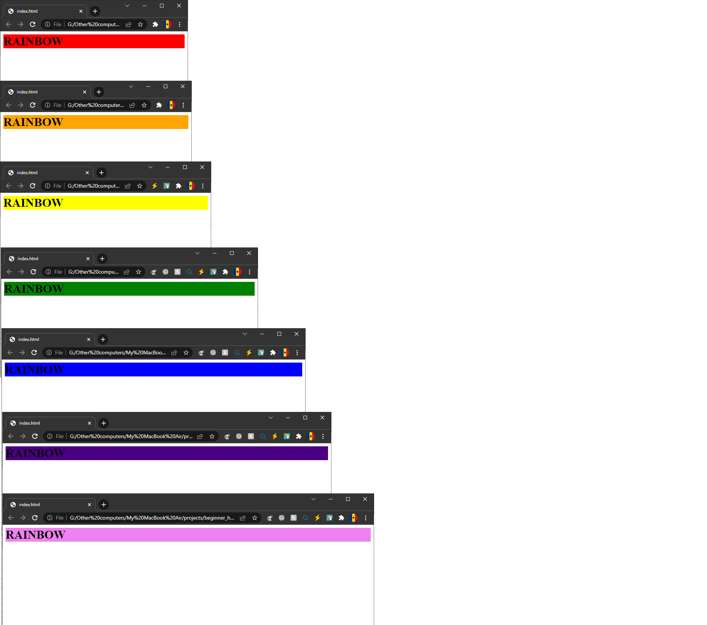

Using what we learned about media queries, try making a rainbow by adding a different background color to the h1 element in app.css for seven different screen sizes of the page. What we want here is a red background color for a small screen size and as we make the window larger, the background color should change until it reaches the last color of the rainbow: violet. The end result should look something like:

You do not need to touch the index.html file.